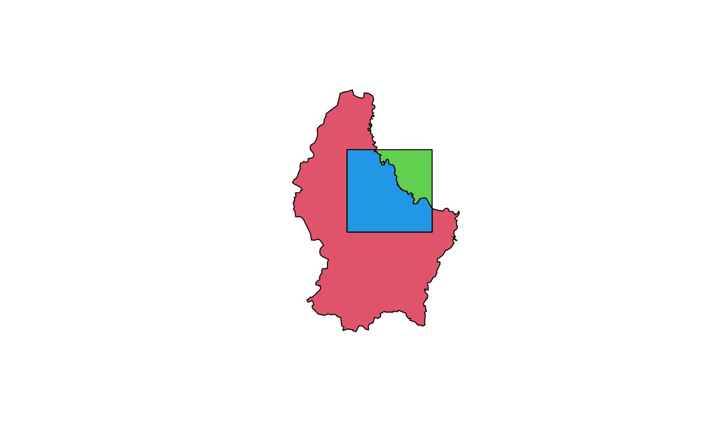

union.RdExtent objects: Objects are combined into their union. See crop and extend to union a Raster object with an Extent object.
Two SpatialPolygons* objects. Overlapping polygons (between layers, not within layers) are intersected, other spatial objects are appended. Tabular attributes are joined. See bind if you want to combine polygons without intersection.
Single SpatialPolygons* object. Overlapping polygons are intersected. Original attributes are lost. New attributes allow for determining how many, and which, polygons overlapped.
Union for SpatialLines and SpatialPoints simply combines the two data sets; without any geometric intersections. This is equivalent to bind.
# S4 method for Extent,Extent union(x, y) # S4 method for SpatialPolygons,SpatialPolygons union(x, y) # S4 method for SpatialPolygons,missing union(x, y) # S4 method for SpatialLines,SpatialLines union(x, y) # S4 method for SpatialPoints,SpatialPoints union(x, y)
| x | Extent or SpatialPolygons* object |
|---|---|
| y | Same as |
Extent or SpatialPolygons object
merge for merging a data.frame with attributes of Spatial objects
and +,SpatialPolygons,SpatialPolygons-method for an algebraic notation
e1 <- extent(-10, 10, -20, 20) e2 <- extent(0, 20, -40, 5) union(e1, e2) #> class : Extent #> xmin : -10 #> xmax : 20 #> ymin : -40 #> ymax : 20 #SpatialPolygons if (require(rgdal) & require(rgeos)) { p <- shapefile(system.file("external/lux.shp", package="raster")) p0 <- aggregate(p) b <- as(extent(6, 6.4, 49.75, 50), 'SpatialPolygons') crs(b) <- crs(p) u <- union(p0, b) plot(u, col=2:4) } 